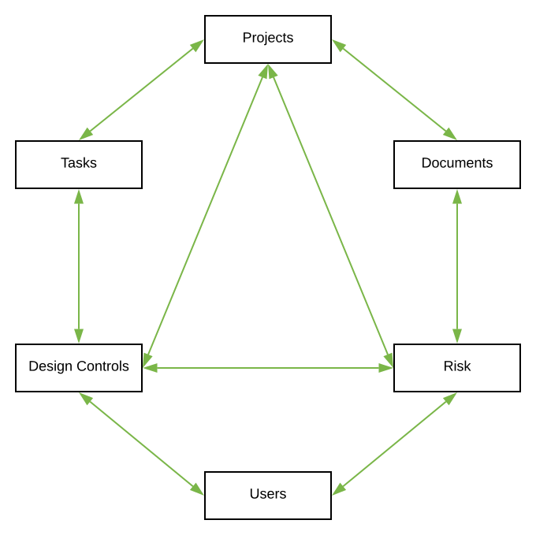
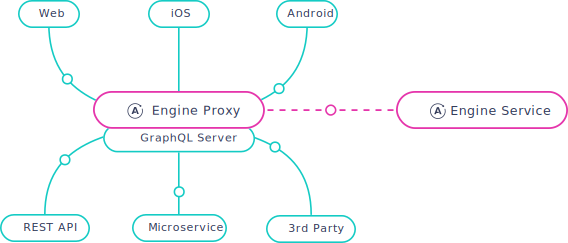

Welcome!
Patrick McGill
Adam Davis
What are we doing here?
The Problem
REST at scale
Lots of data points
More importantly, lots of edges

Enter Ember Data
Pros
- Caching
- Querying
- Types... kind of
Cons
- Network traffic
- Needs to know about models up front
- Greedy!
We can do better...
Theoretical Solution
GraphQL

A query language for your API
type Person {
name: String
email: String
phoneNumber: String
age: Int
articles: [Article]
}
type Article {
title: String
text: String
author: Person
comments: [Post]
}
type Post {
text: String
date: Long
author: Person
article: Article
}
Example Query
query {
article(id: "1234") {
text
author {
name
}
comments {
text
date
author {
name
}
}
}
}
Example Response
{
"data": {
"article": {
"text": "How to adopt GraphQL and Apollo",
"author": {
"name": "Patrick McGill"
},
"comments": [
{
"text": "Cool article",
"date": 111111111,
"author": {
"name": "Adam Davis"
}
},
...
]
}
}
}
graphql-java
- Based on JavaScript reference implementation
- Sensible defaults, highly customizable
Code-first schema generation
GraphQLObjectType personType = newObject()
.name("Person")
.field(newFieldDefinition()
.name("name")
.type(GraphQLString))
.field(newFieldDefinition()
.name("email")
.type(GraphQLString))
.field(newFieldDefinition()
.name("phoneNumber")
.type(GraphQLString))
.field(newFieldDefinition()
.name("age")
.type(GraphQLInt))
.field(newFieldDefinition()
.name("articles")
.type(new GraphQLList(articleType)
.dataFetcher(environment ->
loadArticles(environment))
.build();
A fully-featured, production ready GraphQL client
Declaratively bind data to your view layer
Queries, caching, mutations, optimistic UI, subscriptions, pagination, server-side rendering, prefetching, and more.
Simple Setup (Ember CLI)
ember-apollo-client
// config/environment.js
let ENV = {
...
apollo: {
apiURL: 'https://test.example/graphql',
// this abstracts apollo configuration behind the scenes.
// more complex configuration is doable by overriding methods
// on the provided service.
},
...
}
Example Usage
import Route from "@ember/routing/route";
import RouteQueryManager from "ember-apollo-client/mixins/route-query-manager";
import gql from 'graphql-tag';
export default Route.extend(RouteQueryManager, {
model(params) {
let variables = { id: params.id };
return this.apollo.watchQuery({
gql`
query getPersonAndArticles($id: ID!) {
person(personId: $id) {
id
name
articles {
id
title
}
}
}
`,
variables
});
}
});
Implementation
Where to begin?
Rewrite from scratch?
Not happening

Incremental Adoption
You guessed it!
First things first
Back-end support
Incremental Approach
- Disconnected from ORM
- Cherry-pick supported resources as needed
- Mutations - single source of truth for business logic
Front End Challenges
The elephant in the room...
How do we keep both data clients happy?
Keep their caches up to date
Apollo => Ember-Data
...
updatePerson(newPerson) {
this.apollo.mutate({
mutation,
variables: { newPerson }
},
// update: developer facing API for making
// fine-grained manual updates to Apollo's cache
update(proxy, { data }) {
// we can opportunistically update ember-data
// by calling this.store.pushPayload here
})
},
...
Ember-Data => Apollo
...
updatePlace: async function(placeId, newPlaceTitle) {
const place = await this.store.find('place', placeId);
place.set('title', newPlaceTitle);
await place.save();
// inform apollo of new data by writing
// writing directly to the cache
this.apollo.writeFragment({
id: placeId,
fragment: gql`
fragment newPlaceTitle on Place {
title
}
`,
data: {
title: newPlaceTitle
}
});
},
...
Gotchas
The developer's relationship with the cache is substantially different than with Ember-data
Analogous to driving a manual vs an automatic
Gotchas (cont.)
Required us to rethink authorization
Separate micro-service - lots of network traffic!
Benefits
- Encourages component-first development through use of co-location
- Allows us to think of performance at the field level instead of model level
Where do we go from here?
Good-bye, Ember-Data (eventually)
Single source of truth for the front-end
Multiple back-end data sources, funneled through a single schema
- Business logic
- elasticSearch
- auth services
- integrations
Phase out standard REST resources
No more resource re-routing
Subscriptions
Low-latency updates via real-time transfer protocol (e.g. websockets)
subscription onPostAdded($articleId: ID!) {
postAdded(articleId: $articleId) {
id
msg
}
}
Fine-grained Server-side Analytics
- Execution time
- Usage Statistics
- Error Reporting
can all be accomplished at the field level
Apollo Engine
Self hosted proxy that aggregates data and sends to Apollo's cloud analytics service
